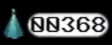

Pieces
{kind=link}

{kind=link}
The piece counter
Pieces are objects collected throughout Petscop by the player. A count is kept by the game of how many are currently in the player's possession. Pieces can typically be found spinning on the ground and obtained by walking through them, however, they can also be attached to something else, needing to be pried free with a tool to be collected.
Description
The majority of pieces are found placed on the ground and can be walked over to be collected.
Pieces come in the following forms:
- Green rings
- Light blue cones, with a sphere on top.
- Purple, hollow triangular prisms
- Silver-green, warped polyhedrons
- Pink shapes
Notable Pieces
Some pieces are attached to various objects and must be obtained by using a tool.
In the windmill, they can be found in a heap around the windmill's internal workings and cause it to spin in the wrong direction. Paul has to use the white tool to collect them and return the windmill to working order. Doing this gives him 50 pieces.
In the house, there are some objects on a table by Care's room that seem to be ensnared by them, and Paul must capture a teal tool in a bucket and use it to remove them. Doing this gives him 15 pieces.
The computer room features a large cone piece with smaller cone pieces circling around. It is the only object that can be manually interacted with using the green tool, and doing so grants the player 26 pieces. This appears to shut off every computer in the room, along with the large cone, as the smaller cones disappear and the noise stops.
")
{kind=link}
{kind=link}
{kind=link}
Purpose
It is unknown what the original purpose of the pieces was, however, 1000 of them are needed to activate the machine in the school basement. Paul and Tiara both obtained 500 pieces to activate the machine, but Tiara had to collect some pieces that Paul got before. This could mean that there are only 500 pieces in the entire game and they are sometimes unique to each player.
Notes


{kind=link}
Blue cone piece loading screen (brightened), shown when entering the party room.
Paul calls pieces "money" in Petscop 1.
The piece counter can be used to keep track of when Paul starts a new save, e.g. in Petscop 13.
Lina Leskowitz's in-game appearance in the windmill and brightened Newmaker Plane have a similar shape to a cone piece, most notably the large cone piece seen in the computer room. The party room's loading screen depicts a blue cone piece in front of a dark background.
Theories
Specific types and shapes of pieces appear to have some power aside from being collectibles. Their exact purpose is unknown, but many of them are arranged in certain positions when attached to something else. It may be possible they can cause unusual events in the game to happen or be prevented when attached to objects, given their usage in the basement machine and the windmill. The large cone piece in the computer room could be a machine powering the Tarnacop computers.
Assuming there isn't another location with pieces that was never shown, it is unknown how Paul and Tiara were able to retrieve every piece on the second floor of the school, as the player is pulled to the girl image whenever they attempt to walk very far away from it. It is possible that playing one of the Board games disables the dragging on the 2nd floor of the school, allowing the player to collect every piece on that floor.